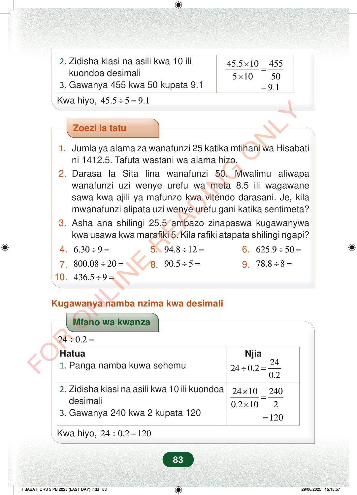

2.Zidisha kiasi na asili kwa 10 ilikuondoa desimali3.Gawanya 455 kwa 50 kupata 9.145.51045551050×=×9.1=Kwa hiyo,45.559.1÷=Zoezi la tatu1.Jumla ya alama za wanafunzi 25 katika mtihani wa Hisabatini 1412.5. Tafuta wastani wa alama hizo.2.Darasa la Sita lina wanafunzi 50. Mwalimu aliwapawanafunzi uzi wenye urefu wa meta 8.5 ili wagawanesawa kwa ajili ya mafunzo kwa vitendo darasani. Je, kilamwanafunzi alipata uzi wenye urefu gani katika sentimeta?3.Asha ana shilingi 25.5 ambazo zinapaswa kugawanywakwa usawa kwa marafiki 5. Kila rafiki atapata shilingi ngapi?4.6.309÷=5.94.812÷=6.625.950÷=7.800.0820÷=8.90.55÷=9.78.88÷=10.436.59÷=Kugawanya namba nzima kwa desimaliMfano wa kwanza240.2÷=Hatua1.Panga namba kuwa sehemuNjia24240.20.2÷=2.Zidisha kiasi na asili kwa 10 ili kuondoadesimali3.Gawanya 240 kwa 2 kupata 12024102400.2102×=×120=Kwa hiyo,240.2120÷=83
2. Zidisha kiasi na asili kwa 10 ili kuondoa desimali 3. Gawanya 455 kwa 50 kupata 9.1
45.5 10 455 5 10 50 × = × 9.1 = Kwa hiyo, 45.5 5 9.1 ÷ =
Zoezi la tatu
1. Jumla ya alama za wanafunzi 25 katika mtihani wa Hisabati ni 1412.5. Tafuta wastani wa alama hizo. 2. Darasa la Sita lina wanafunzi 50. Mwalimu aliwapa wanafunzi uzi wenye urefu wa meta 8.5 ili wagawane sawa kwa ajili ya mafunzo kwa vitendo darasani. Je, kila mwanafunzi alipata uzi wenye urefu gani katika sentimeta? 3. Asha ana shilingi 25.5 ambazo zinapaswa kugawanywa kwa usawa kwa marafiki 5. Kila rafiki atapata shilingi ngapi?
4. 6.30 9 ÷ = 5. 94.8 12 ÷ = 6. 625.9 50 ÷ =
7. 800.08 20 ÷ = 8. 90.5 5 ÷ = 9. 78.8 8 ÷ = 10. 436.5 9 ÷ =
Kugawanya namba nzima kwa desimali
Mfano wa kwanza
24 0.2 ÷ =
Hatua 1. Panga namba kuwa sehemu Njia
24 24 0.2 0.2 ÷ =
2. Zidisha kiasi na asili kwa 10 ili kuondoa desimali 3. Gawanya 240 kwa 2 kupata 120
24 10 240 0.2 10 2 × = × 120 =
Kwa hiyo, 24 0.2 120 ÷ =
83
Zoezi la tatu1.Jumla ya alama za wanafunzi 25 katika mtihani wa Hisabati ni 1412.5. Tafuta wastani wa alama hizo.2.Darasa la Sita lina wanafunzi 50. Mwalimu aliwapa wanafunzi uzi wenye urefu wa meta 8.5 ili wagawane sawa kwa ajili ya mafunzo kwa vitendo darasani.Je, kila mwanafunzi alipata uzi wenye urefu gani katika sentimeta?3.Asha ana shilingi 25.5 ambazo zinapaswa kugawanywa kwa usawa kwa marafiki 5.Kila rafiki atapata shilingi ngapi?4.6.30 ÷ 9 = [[blank:item-4]]5.94.8 ÷ 12 = [[blank:item-5]]6.625.9 ÷ 50 = [[blank:item-6]]7.800.08 ÷ 20 = [[blank:item-7]]8.90.5 ÷ 5 = [[blank:item-8]]9.78.8 ÷ 8 = [[blank:item-9]]10.436.5 ÷ 9 = [[blank:item-10]]
Kugawanya namba nzima kwa desimaliMfano wa kwanza wa 24 ÷ 0.2. Hatua zinaonyesha kuandika kama sehemu, kuzidisha juu na chini kwa 10 ili kuondoa desimali, kisha kugawanya 240 kwa 2 kupata 120.Mfano wa kwanza<math><mrow><mn>24</mn><mo>÷</mo><mn>0.2</mn><mo>=</mo></mrow></math>Hatua1. Panga namba kuwa sehemuNjia<math><mrow><mn>24</mn><mo>÷</mo><mn>0.2</mn><mo>=</mo><mfrac><mn>24</mn><mn>0.2</mn></mfrac></mrow></math>2. Zidisha kiasi na asili kwa 10 ili kuondoa desimali3. Gawanya 240 kwa 2 kupata 120<math><mrow><mfrac><mrow><mn>24</mn><mo>×</mo><mn>10</mn></mrow><mrow><mn>0.2</mn><mo>×</mo><mn>10</mn></mrow></mfrac><mo>=</mo><mfrac><mn>240</mn><mn>2</mn></mfrac><mo>=</mo><mn>120</mn></mrow></math>Kwa hiyo, 24 ÷ 0.2 = 120